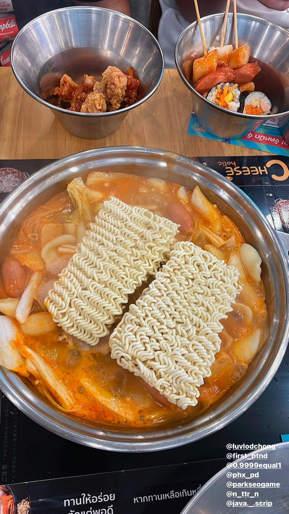

Document
Karaoke
28.10.22
วันนี้เป็นวันสอบโมดูนที่สองผมทำได้ไม่ค่อยดีทำรู้สึกงอมมากแต่หลังจากสอบเสร็จผมกับเพื่อนนัดกันไปร้องคาราโอเกะที่ซีคอนบางแควันนี้ผมเป็นคนขับรถให้เพื่อนๆ3คนส่วนที่เหลือขึ้นรถเมย์ตามมาเพราะเล่นเกมแพ้ผมเกร็งมากเพราะปกติไม่ค่อยได้ขับรถให้ใครนั่งพอพวกผมถึงซักพักที่เหลือก็ตามมาถึงทุกคนเลยไปจองคิวคาราโอเกะพร้อมกันแล้วค่อยไปหาอะไรกินพวกเรากินอาหารเกาหลีเป็นเหมือนหม้าไฟต๊อกบ๊กกีและมีพวกรามยอนไก่ทอดเป็นบุฟเฟ่ราคา299รวมน้ำพวกผมกินไปเยอะมากแต่โต๊ะผมก็แพ้ให้กับเพื่อนที่นั่งโต๊ะข้างๆกินคุ้มมากหัวไปเห็นเต็มหม้อตลอดแต่ก็ซัดกันจนหมดพอกินอึ่มก็เตรียมตัวไปร้องคาราโอเกะกันต่อพอไปถึงทุกคนก็เลือกที่นั่งเลื่องเพลงกันห้องที่เราจองเป็นห้องvipทำให้ใหญ่มากและมีไมค์หลายตัวราคาก็ตกคนละ50บาททุกคนร้องกันสนุกรวมถึงผมด้วยมันทำให้ผมลืมเรื่องคะแนนสอบเลย5555วันนั้นคนไปเยอะเลยแย่งกันเลือกเพลงทำให้รอเพลงนานแต่ก็คุ้มค่าที่จะรอผมเพิ่งเคยมาคาราโอเกะเป็นครั้งแรกเป็นประสปการณ์ที่สนุกมากๆพอร้องเสร็จเราก็ไปกินไอศกรีมเดรี่ควินกันต่อแล้วค่อยแยกย้ายกันกลับบ้าน
